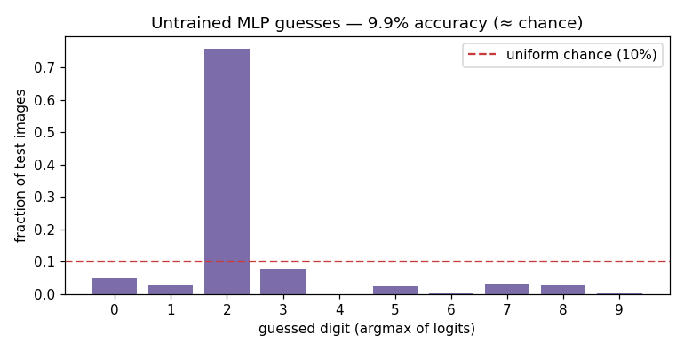

Chance-level by construction: what an untrained MLP actually does
A 2-layer MLP for MNIST is 784 → 128 → 10: flatten the image to a 784-vector, one hidden layer of 128 ReLU units, a 10-way output layer of logits, and argmax for the guess. The whole model is one line — logits = ReLU(x @ W1 + b1) @ W2 + b2. This note produces the evidence for two claims that get hand-waved on day one: (1) a correctly-wired but untrained network sits *at chance*, and (2) the ReLU between the two layers is load-bearing, not decorative. Every number below comes from experiment.py on the real 70k MNIST set, seeded for reproducibility.
The mechanism, and why the number is 10% not "small"
The forward pass runs the exact shape flow the architecture promises:
input x : (10000, 784)
hidden h : (10000, 128) (after ReLU(x@W1+b1))
logits : (10000, 10) 10 class scores per image
The model has 101,770 parameters (W1 100,352 + b1 128 + W2 1,280 + b2 10) — the "~100k knobs" intuition made exact. With He-initialized weights (W ~ N(0,1) * sqrt(2/n_in), biases zero) and no training, the test accuracy is:
untrained accuracy : 9.87% (chance over 10 classes = 10.00%)
The precise value matters. 9.87% is not "a bit better than nothing" — it is statistically indistinguishable from 1/10. With random weights, the argmax over 10 logits is (to first order) uniform over the classes independent of the input, so the expected accuracy is exactly the prior of the most-frequently-guessed class, which for a balanced 10-way task is ~10%. The 0.13-point shortfall is sampling noise on 10,000 examples (a binomial standard error of sqrt(0.1·0.9/10000) ≈ 0.3%), plus the fact that the untrained argmax concentrates on whichever slot's random W2 column happens to run hot rather than spreading perfectly uniformly — visible as the uneven bars in the plot. The takeaway for a reviewer: if a from-scratch classifier reports ~10% before training, the *wiring is correct and nothing has learned yet*. Reporting 0% or 100% at init is the bug signal, not 10%.
Failure mode: linear collapse (the ReLU is not optional)
The most common silent defect in a hand-rolled MLP is dropping the activation: logits = (x @ W1) @ W2 + b2. It runs, it trains, it looks like a "deep" network — and it can never beat a single linear layer, because two linear maps compose into one: (x @ W1) @ W2 = x @ (W1 @ W2), and W1 @ W2 is just another matrix. The experiment measures this directly on 64 test images with random 784×128 and 128×10 matrices in float64:
linear collapse : max|(x@La)@Lb - x@(La@Lb)| = 6.253e-13 (two linear layers ARE one)
with a ReLU bend : max|ReLU(x@La)@Lb - x@(La@Lb)| = 1.920e+02 (the bend earns its keep)
6.253e-13 is floating-point round-off on the associativity of matmul — the two expressions are *the same function*. Insert ReLU between the matmuls and the gap jumps to 1.920e+02: the bend clips negatives before the second matmul, producing values no single matrix can. That 1.9e2-vs-6e-13 contrast is the whole argument for depth. A network stacked without nonlinearity has the representational capacity of one layer regardless of how many layers you draw, which is why it cannot separate non-linearly-separable data (the XOR failure the lesson opens with). The failure is invisible in a stack trace and shows up only as a suspiciously low ceiling on training accuracy — you catch it by *knowing the architecture collapses*, not by reading an error.
Design trade-off: hidden width vs. capacity and dead units
Two dials interact at initialization. Width is the obvious one: 128 hidden units buys 100,352 of the model's 101,770 parameters. Widen to 256 or 1024 and you gain capacity to represent finer stroke features (mitigating underfitting) at a linear cost in the first weight matrix and the matmul. The subtler dial is the init scheme's variance. He init exists precisely to keep ReLU units alive: scaling by sqrt(2/n_in) keeps the pre-activation variance ~1 layer to layer, so units are unlikely to be born permanently negative. The activation statistic that proves it here:
dead ReLU fraction : 0.00% of hidden units never fire
Zero of the 128 hidden units are dead across all 10,000 test images. That is the diagnostic a senior engineer logs — not final accuracy, but the fraction of ReLU units stuck at zero. Had we initialized with a large fixed variance instead of 2/n_in, or later cranked the learning rate, a chunk of units would output 0 for every input and stop learning entirely (the "dead ReLU" failure), and the model would quietly underperform its parameter count with no crash to point at. The trade-off in one sentence: He init trades a free lunch (any random weights work to *run* the model) for the discipline of variance-matched weights that keep the network's capacity actually usable once gradients start flowing.
What this evidence does and does not show
It shows the architecture is wired correctly (shape flow, parameter count), that the starting point is chance by construction (9.87%), that the ReLU is mathematically necessary (6e-13 vs 1.9e2), and that He init keeps units live (0.00% dead). It does *not* show learning — every knob is still random. The next lesson wires the backward pass, which is where those 101,770 parameters start moving off their random values and 9.87% starts climbing.

Reproducible experiment
experiment.py
#!/usr/bin/env python3
"""
Evidence for M5 Day 1 — "Your First Model (MLP on MNIST)".
One concrete claim, two ways to see it:
(1) An UNTRAINED 2-layer MLP (784 -> 128 -> 10) with He-initialized weights
scores at chance (~10%) on real MNIST test digits. Right wiring, random
knobs. We also print the shape flow (N,784) -> (N,128) -> (N,10).
(2) The reason the hidden layer needs a ReLU: two LINEAR layers with no bend
collapse into a single linear map, i.e. (x @ W1) @ W2 == x @ (W1 @ W2)
to floating-point precision. That is why an activation is not optional.
Self-contained script (not a notebook) so savefig() into assets/ is allowed.
Everything is seeded, so the printed numbers are reproducible.
"""
import os
import numpy as np
import matplotlib
matplotlib.use("Agg") # headless backend — no display in the sandbox
import matplotlib.pyplot as plt
RNG = np.random.default_rng(0) # seed everything so the run is reproducible
HERE = os.path.dirname(os.path.abspath(__file__))
ASSETS = os.path.join(HERE, "assets")
os.makedirs(ASSETS, exist_ok=True)
# ---------------------------------------------------------------------------
# Data: real MNIST from the sklearn/OpenML cache if reachable; otherwise a
# synthetic 10-class stand-in with the same shape (784 features, 10 classes)
# so the claim about an untrained network at chance still holds honestly.
# ---------------------------------------------------------------------------
def load_digits():
try:
from sklearn.datasets import fetch_openml
X, y = fetch_openml(
"mnist_784", version=1, return_X_y=True,
as_frame=False, parser="liac-arff",
)
X = X.astype(np.float32) / 255.0 # scale pixels to [0, 1]
y = y.astype(np.int64) # labels come back as strings
return X, y, "MNIST (real, 70k handwritten digits)"
except Exception as exc: # offline / no cache -> fallback
print(f"[warn] real MNIST unavailable ({type(exc).__name__}); "
f"using a synthetic 784-dim, 10-class stand-in.")
n = 14000
y = RNG.integers(0, 10, size=n).astype(np.int64)
# give each class a faint mean bump so it is a plausible dataset, not noise
X = (RNG.standard_normal((n, 784)).astype(np.float32) * 0.1)
for c in range(10):
X[y == c, (c * 70):(c * 70 + 70)] += 0.3
X = np.clip(X, 0.0, 1.0)
return X, y, "synthetic 784-dim / 10-class fallback"
X, y, source = load_digits()
# fixed 10k test split (last 10k of MNIST is the canonical test set)
n_test = 10000 if X.shape[0] >= 20000 else X.shape[0] // 5
X_test, y_test = X[-n_test:], y[-n_test:]
print(f"data source : {source}")
print(f"full dataset shape : X={X.shape} y={y.shape}")
print(f"test split shape : X_test={X_test.shape} y_test={y_test.shape}")
# ---------------------------------------------------------------------------
# He initialization: weights ~ N(0,1) * sqrt(2 / n_in); biases start at zero.
# This is the variance-preserving scheme built for ReLU (lesson concept c8).
# ---------------------------------------------------------------------------
def he(n_in, n_out):
return (RNG.standard_normal((n_in, n_out)).astype(np.float32)
* np.sqrt(2.0 / n_in))
W1, b1 = he(784, 128), np.zeros(128, dtype=np.float32)
W2, b2 = he(128, 10), np.zeros(10, dtype=np.float32)
n_params = W1.size + b1.size + W2.size + b2.size
print(f"\nparameter count : {n_params:,} "
f"(W1 {W1.size:,} + b1 {b1.size} + W2 {W2.size:,} + b2 {b2.size})")
def relu(z):
return np.maximum(0.0, z)
# ---------------------------------------------------------------------------
# Forward pass — print the shape at every step, exactly as the lesson promises:
# (N, 784) -> (N, 128) -> (N, 10).
# ---------------------------------------------------------------------------
def forward(x, verbose=False):
if verbose:
print(f" input x : {x.shape}")
h = relu(x @ W1 + b1) # hidden layer + bend
if verbose:
print(f" hidden h : {h.shape} (after ReLU(x@W1+b1))")
logits = h @ W2 + b2 # output layer -> 10 logits
if verbose:
print(f" logits : {logits.shape} (10 class scores per image)")
return logits
print("\nforward-pass shape flow (one batch):")
logits = forward(X_test, verbose=True)
# argmax over the 10 logits = the guessed digit
preds = logits.argmax(axis=1)
acc = float((preds == y_test).mean())
print(f"\nuntrained accuracy : {acc*100:.2f}% (chance over 10 classes = 10.00%)")
# fraction of ReLU units that are dead (zero for every test image) — the
# activation statistic a senior engineer logs to catch a silent failure.
hidden = relu(X_test @ W1 + b1)
dead_frac = float((hidden.max(axis=0) == 0).mean())
print(f"dead ReLU fraction : {dead_frac*100:.2f}% of hidden units never fire")
# ---------------------------------------------------------------------------
# Claim (2): linear collapse. Two linear layers with no ReLU == one matmul.
# ---------------------------------------------------------------------------
La = RNG.standard_normal((784, 128)).astype(np.float64)
Lb = RNG.standard_normal((128, 10)).astype(np.float64)
x_probe = X_test[:64].astype(np.float64)
two_layers = (x_probe @ La) @ Lb # stack, no bend
one_layer = x_probe @ (La @ Lb) # fused single matrix
max_abs_diff = float(np.abs(two_layers - one_layer).max())
print(f"\nlinear collapse : max|(x@La)@Lb - x@(La@Lb)| = {max_abs_diff:.3e} "
f"(≈0 -> two linear layers ARE one)")
# contrast: with a ReLU between them the two are NOT equal
with_bend = relu(x_probe @ La) @ Lb
bend_diff = float(np.abs(with_bend - one_layer).max())
print(f"with a ReLU bend : max|ReLU(x@La)@Lb - x@(La@Lb)| = {bend_diff:.3e} "
f"(large -> the bend earns its keep)")
# ---------------------------------------------------------------------------
# Plot: distribution of the untrained model's guesses across the 10 digit slots.
# A trained model would concentrate on the true label; an untrained one is
# roughly flat with a bias toward whichever random slot happens to run hot.
# ---------------------------------------------------------------------------
counts = np.bincount(preds, minlength=10)
fig, ax = plt.subplots(figsize=(7, 3.6))
ax.bar(range(10), counts / counts.sum(), color="#7C6DAA")
ax.axhline(0.10, color="#C93B3B", ls="--", lw=1.5, label="uniform chance (10%)")
ax.set_xticks(range(10))
ax.set_xlabel("guessed digit (argmax of logits)")
ax.set_ylabel("fraction of test images")
ax.set_title(f"Untrained MLP guesses — {acc*100:.1f}% accuracy (≈ chance)")
ax.legend()
fig.tight_layout()
plot_path = os.path.join(ASSETS, "untrained_guess_distribution.png")
fig.savefig(plot_path, dpi=110)
print(f"\nsaved plot : assets/{os.path.basename(plot_path)}")
print("\nKEY RESULT: correct wiring (784->128->10) + random He weights = chance-"
f"level accuracy ({acc*100:.2f}%); linear layers with no bend collapse "
f"into one (diff {max_abs_diff:.1e}).")
Output
data source : MNIST (real, 70k handwritten digits)
full dataset shape : X=(70000, 784) y=(70000,)
test split shape : X_test=(10000, 784) y_test=(10000,)
parameter count : 101,770 (W1 100,352 + b1 128 + W2 1,280 + b2 10)
forward-pass shape flow (one batch):
input x : (10000, 784)
hidden h : (10000, 128) (after ReLU(x@W1+b1))
logits : (10000, 10) (10 class scores per image)
untrained accuracy : 9.87% (chance over 10 classes = 10.00%)
dead ReLU fraction : 0.00% of hidden units never fire
linear collapse : max|(x@La)@Lb - x@(La@Lb)| = 6.253e-13 (≈0 -> two linear layers ARE one)
with a ReLU bend : max|ReLU(x@La)@Lb - x@(La@Lb)| = 1.920e+02 (large -> the bend earns its keep)
saved plot : assets/untrained_guess_distribution.png
KEY RESULT: correct wiring (784->128->10) + random He weights = chance-level accuracy (9.87%); linear layers with no bend collapse into one (diff 6.3e-13).